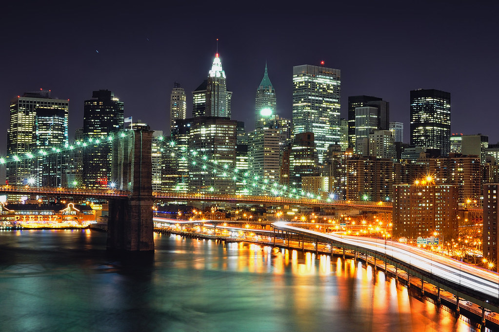
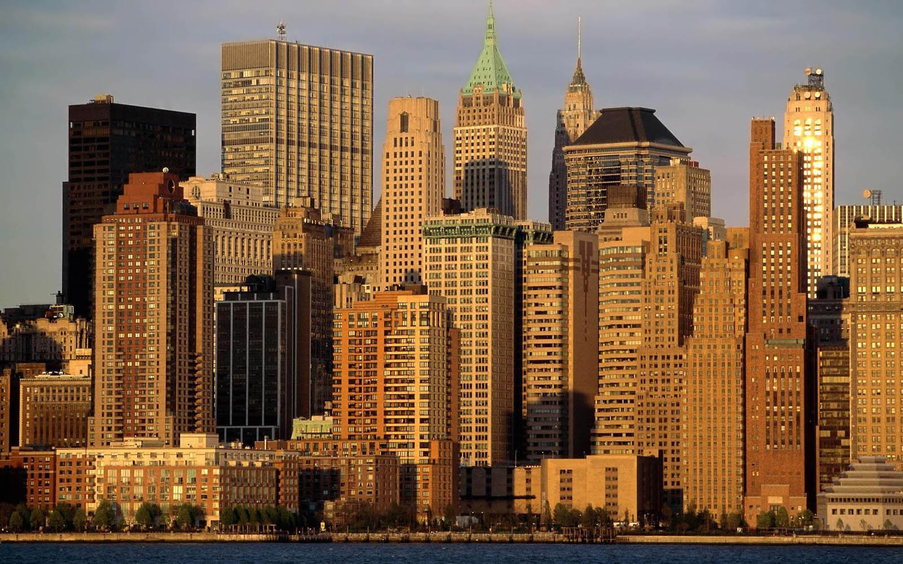
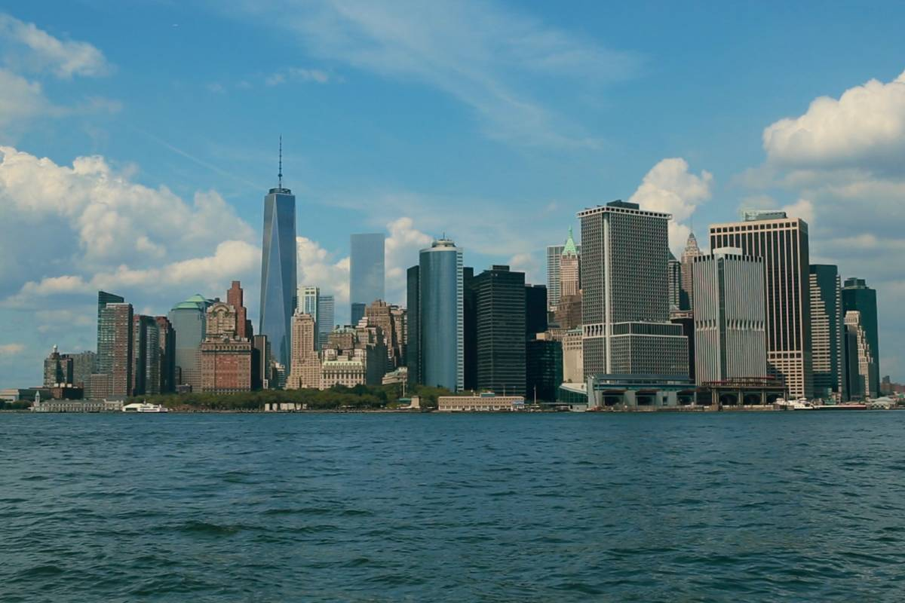
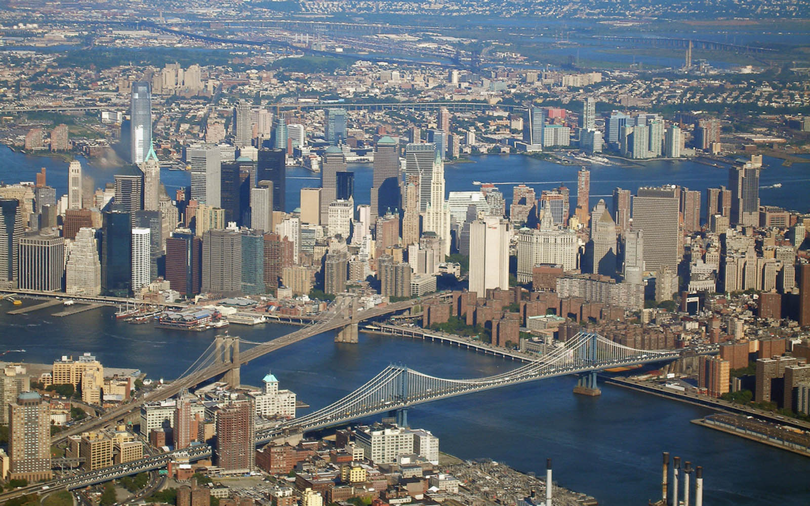

Manhattan,often referred to by residents of the New York City area as the city,is the most densely populated of the five borought
of New York City,and coextensive with the country of New York,one of the original counties of the U.S. states of New York.Manhattan
serves as the city's economic and administrative center,culture identifier,and historical birthplace.The borough consists mostly of
Manhattan Island,bounded by the Hudson,East ,and Harlem rivers,as well as several small adjacent islands.Manhattan additionally
contain Marble Hill,a small neighbordhood now on the U.S. mainland that was connected using landfill to the Bronx and separated
from the rest of Manhattan by the Harlem River.Manhattan Island is divided into three informally bounded components,each aligned
with the borough's lond axis.Lower,Midtown,and upper Manhattan
   